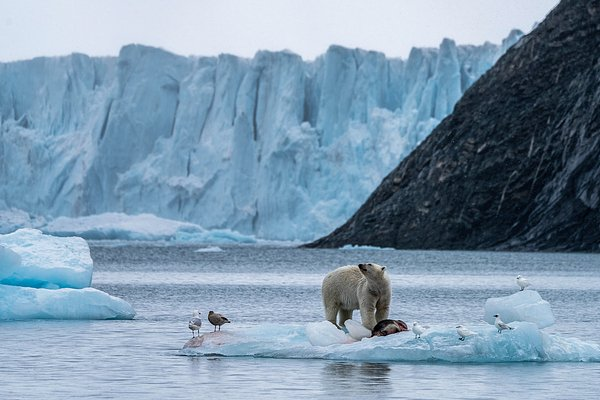

«Словно с другой планеты»
Россиянин пять лет снимал фильм об Арктике. Почему это путешествие изменило его жизнь?
 00:01 6 марта 2024В российский прокат вышел документальный фильм «В Арктику». Его автор, фотограф и путешественник Леонид Круглов, вместе с командой операторов пять лет сопровождал моряков и ученых в экспедициях по российскому Северу. В своей картине он показал Арктику загадочной, мистической и даже инопланетной, с ее ледяными дворцами, многовековыми историческими артефактами и удивительными жителями — белыми медведями, моржами, нарвалами и людьми. Корреспондент «Ленты.ру» сходила на премьеру фильма в Москве и узнала у режиссера, почему, раз побывав в Арктике, навсегда оставляешь там частичку души. — «Лента.ру»: Какая она, Арктика? Что делает ее непохожей на другие точки планеты? Круглов: Мне казалось, что Арктика — это что-то белое и однообразное, льды, снега и белые медведи. Не ожидал, что там настолько многообразная природа. Сначала я думал, что Земля Франца-Иосифа — это самое-самое крутое. Там удалось сделать невероятные кадры столовых гор, ледников, моржовых лежбищ, птичьих базаров. Меня особенно удивил мыс Флора, который выглядит, как зеленый обрыв посреди арктических льдов. Раз в году он расцветает на две-три недели, потому что там гнездится много птиц, которые удобряют землю своим пометом, а на лапках приносят семена и микроорганизмы. Потом я оказался на архипелаге Северная Земля. Она брутальная, странная. Ледники там почему-то полосатые, как тигры, а айсберги формируют совершенно фантастические формы, напоминая плавучие дворцы. Чуть дальше находятся земли еще ближе к Северному полюсу, например, остров Ушакова. Это ледяной блин высотой примерно с четырех-пятиэтажный дом. По его краям — обрывы бирюзовых стен, на которых есть собственный рисунок, похожий на панно. На фоне всего этого плавают моржи. Там достаточно часто бывают исследователи, так что я не рассчитывал увидеть ничего особенного. Оказалось, что местные льды — это что-то запредельное и удивительное. Мы долго работали около ледника Веры, который полярный исследователь Георгий Седов назвал в честь своей жены. Когда мы перелетели через его край, то оказались на огромном поле, похожем на кладку яиц динозавра. Мы увидели круглые конструкции изо льда диаметром по 10-20 метров, расколотые сверху, как будто сейчас оттуда кто-то вылупится.